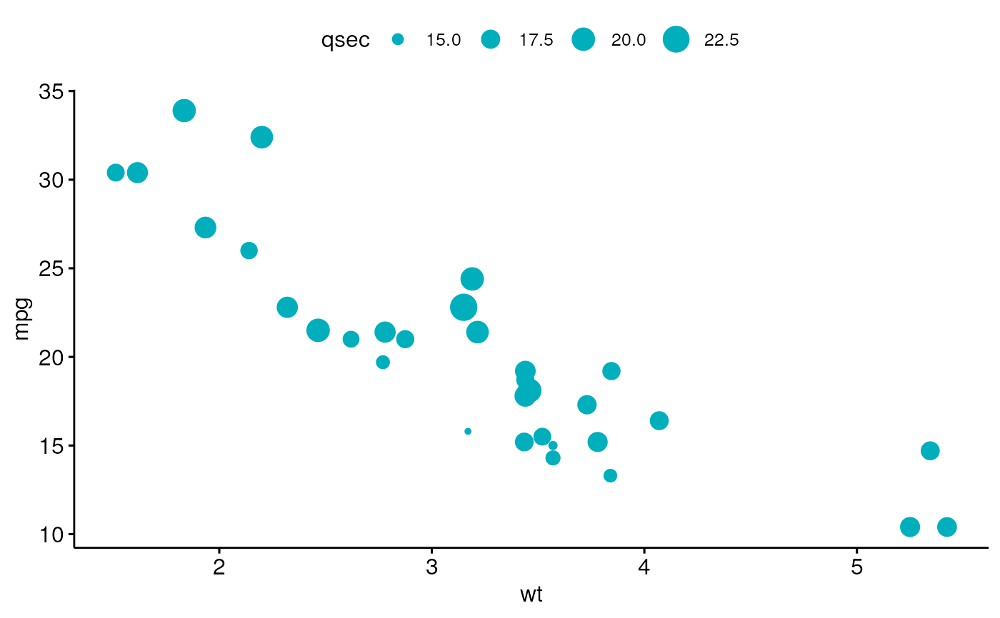

Scatter plot
ggscatter.RdCreate a scatter plot.
ggscatter(data, x, y, combine = FALSE, merge = FALSE, color = "black", fill = "lightgray", palette = NULL, shape = 19, size = 2, point = TRUE, rug = FALSE, title = NULL, xlab = NULL, ylab = NULL, facet.by = NULL, panel.labs = NULL, short.panel.labs = TRUE, add = c("none", "reg.line", "loess"), add.params = list(), conf.int = FALSE, conf.int.level = 0.95, fullrange = FALSE, ellipse = FALSE, ellipse.level = 0.95, ellipse.type = "norm", ellipse.alpha = 0.1, ellipse.border.remove = FALSE, mean.point = FALSE, mean.point.size = ifelse(is.numeric(size), 2 * size, size), star.plot = FALSE, star.plot.lty = 1, star.plot.lwd = NULL, label = NULL, font.label = c(12, "plain"), font.family = "", label.select = NULL, repel = FALSE, label.rectangle = FALSE, cor.coef = FALSE, cor.coeff.args = list(), cor.method = "pearson", cor.coef.coord = c(NULL, NULL), cor.coef.size = 4, ggp = NULL, show.legend.text = NA, ggtheme = theme_pubr(), ...)
Arguments
| data | a data frame |
|---|---|
| x, y | x and y variables for drawing. |
| combine | logical value. Default is FALSE. Used only when y is a vector containing multiple variables to plot. If TRUE, create a multi-panel plot by combining the plot of y variables. |
| merge | logical or character value. Default is FALSE. Used only when y is a vector containing multiple variables to plot. If TRUE, merge multiple y variables in the same plotting area. Allowed values include also "asis" (TRUE) and "flip". If merge = "flip", then y variables are used as x tick labels and the x variable is used as grouping variable. |
| color, fill | point colors. |
| palette | the color palette to be used for coloring or filling by groups. Allowed values include "grey" for grey color palettes; brewer palettes e.g. "RdBu", "Blues", ...; or custom color palette e.g. c("blue", "red"); and scientific journal palettes from ggsci R package, e.g.: "npg", "aaas", "lancet", "jco", "ucscgb", "uchicago", "simpsons" and "rickandmorty". |
| shape | point shape. See |
| size | Numeric value (e.g.: size = 1). change the size of points and outlines. |
| point | logical value. If TRUE, show points. |
| rug | logical value. If TRUE, add marginal rug. |
| title | plot main title. |
| xlab | character vector specifying x axis labels. Use xlab = FALSE to hide xlab. |
| ylab | character vector specifying y axis labels. Use ylab = FALSE to hide ylab. |
| facet.by | character vector, of length 1 or 2, specifying grouping variables for faceting the plot into multiple panels. Should be in the data. |
| panel.labs | a list of one or two character vectors to modify facet panel labels. For example, panel.labs = list(sex = c("Male", "Female")) specifies the labels for the "sex" variable. For two grouping variables, you can use for example panel.labs = list(sex = c("Male", "Female"), rx = c("Obs", "Lev", "Lev2") ). |
| short.panel.labs | logical value. Default is TRUE. If TRUE, create short labels for panels by omitting variable names; in other words panels will be labelled only by variable grouping levels. |
| add | allowed values are one of "none", "reg.line" (for adding linear regression line) or "loess" (for adding local regression fitting). |
| add.params | parameters (color, size, linetype) for the argument 'add'; e.g.: add.params = list(color = "red"). |
| conf.int | logical value. If TRUE, adds confidence interval. |
| conf.int.level | Level controlling confidence region. Default is 95%. Used only when add != "none" and conf.int = TRUE. |
| fullrange | should the fit span the full range of the plot, or just the data. Used only when add != "none". |
| ellipse | logical value. If TRUE, draws ellipses around points. |
| ellipse.level | the size of the concentration ellipse in normal probability. |
| ellipse.type | Character specifying frame type. Possible values are
|
| ellipse.alpha | Alpha for ellipse specifying the transparency level of fill color. Use alpha = 0 for no fill color. |
| ellipse.border.remove | logical value. If TRUE, remove ellipse border lines. |
| mean.point | logical value. If TRUE, group mean points are added to the plot. |
| mean.point.size | numeric value specifying the size of mean points. |
| star.plot | logical value. If TRUE, a star plot is generated. |
| star.plot.lty, star.plot.lwd | line type and line width (size) for star plot, respectively. |
| label | the name of the column containing point labels. Can be also a character vector with length = nrow(data). |
| font.label | a vector of length 3 indicating respectively the size (e.g.: 14), the style (e.g.: "plain", "bold", "italic", "bold.italic") and the color (e.g.: "red") of point labels. For example font.label = c(14, "bold", "red"). To specify only the size and the style, use font.label = c(14, "plain"). |
| font.family | character vector specifying font family. |
| label.select | character vector specifying some labels to show. |
| repel | a logical value, whether to use ggrepel to avoid overplotting text labels or not. |
| label.rectangle | logical value. If TRUE, add rectangle underneath the text, making it easier to read. |
| cor.coef | logical value. If TRUE, correlation coefficient with the p-value will be added to the plot. |
| cor.coeff.args | a list of arguments to pass to the function
|
| cor.method | method for computing correlation coefficient. Allowed values are one of "pearson", "kendall", or "spearman". |
| cor.coef.coord | numeric vector, of length 2, specifying the x and y coordinates of the correlation coefficient. Default values are NULL. |
| cor.coef.size | correlation coefficient text font size. |
| ggp | a ggplot. If not NULL, points are added to an existing plot. |
| show.legend.text | logical. Should text be included in the legends? NA, the default, includes if any aesthetics are mapped. FALSE never includes, and TRUE always includes. |
| ggtheme | function, ggplot2 theme name. Default value is theme_pubr(). Allowed values include ggplot2 official themes: theme_gray(), theme_bw(), theme_minimal(), theme_classic(), theme_void(), .... |
| ... | other arguments to be passed to |
Details
The plot can be easily customized using the function ggpar(). Read ?ggpar for changing:
main title and axis labels: main, xlab, ylab
axis limits: xlim, ylim (e.g.: ylim = c(0, 30))
axis scales: xscale, yscale (e.g.: yscale = "log2")
color palettes: palette = "Dark2" or palette = c("gray", "blue", "red")
legend title, labels and position: legend = "right"
plot orientation : orientation = c("vertical", "horizontal", "reverse")
See also
stat_cor, stat_stars, stat_conf_ellipse and ggpar.
Examples
# Load data data("mtcars") df <- mtcars df$cyl <- as.factor(df$cyl) head(df[, c("wt", "mpg", "cyl")], 3)#> wt mpg cyl #> Mazda RX4 2.620 21.0 6 #> Mazda RX4 Wag 2.875 21.0 6 #> Datsun 710 2.320 22.8 4# Basic plot # +++++++++++++++++++++++++++ ggscatter(df, x = "wt", y = "mpg", color = "black", shape = 21, size = 3, # Points color, shape and size add = "reg.line", # Add regressin line add.params = list(color = "blue", fill = "lightgray"), # Customize reg. line conf.int = TRUE, # Add confidence interval cor.coef = TRUE, # Add correlation coefficient. see ?stat_cor cor.coeff.args = list(method = "pearson", label.x = 3, label.sep = "\n") )# loess method: local regression fitting ggscatter(df, x = "wt", y = "mpg", add = "loess", conf.int = TRUE)# Control point size by continuous variable values ("qsec") ggscatter(df, x = "wt", y = "mpg", color = "#00AFBB", size = "qsec")# Change colors # +++++++++++++++++++++++++++ # Use custom color palette # Add marginal rug ggscatter(df, x = "wt", y = "mpg", color = "cyl", palette = c("#00AFBB", "#E7B800", "#FC4E07") )# Add group ellipses and mean points # Add stars # +++++++++++++++++++ ggscatter(df, x = "wt", y = "mpg", color = "cyl", shape = "cyl", palette = c("#00AFBB", "#E7B800", "#FC4E07"), ellipse = TRUE, mean.point = TRUE, star.plot = TRUE)# Textual annotation # +++++++++++++++++ df$name <- rownames(df) ggscatter(df, x = "wt", y = "mpg", color = "cyl", palette = c("#00AFBB", "#E7B800", "#FC4E07"), label = "name", repel = TRUE)